Option Only Strategies - Bearish
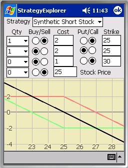
Synthetic Short Stock
A Synthetic Short Stock is a bearish strategy whose profit (loss) behavior is identical to that of a short position in the underlying stock with the advantage of requiring substantially less capital. Ideally, it’s constructed from a short at-the-money call (red) and a long at-the-money put (green).
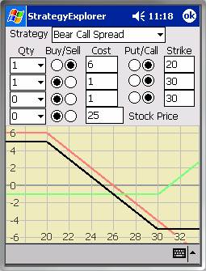
Bear Call Spread
A Bear Call Spread is a bearish strategy constructed from a short in-the-money call (red) and a long out-of-the-money call (green). It achieves exactly the same result as a Bear Put Spread with a profit profile similar to a short position in the underlying, except that both profits and losses are capped.
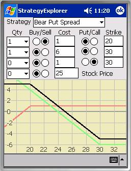
Bear Put Spread
A Bear Put Spread is a bearish strategy constructed from a short out-of-the-money put (red) and a long in-the-money put (green). It achieves exactly the same result as a Bear Call Spread with a profit profile similar to a short position in the underlying, except that both profits and losses are capped.
Option Spreads - Neutral, Low Volatility
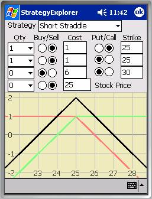
Short Straddle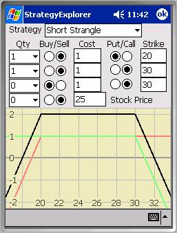
A Short Straddle is a neutral strategy, betting on little or no movement in the underlying stock price. Ideally, it’s constructed from a short at-the-money call and a short at-the-money put with the same strike. It has limited profit potential, but can produce unlimited losses, as shown in the example at right.Strangles
Strangles broaden the low volatility region of straddles by separating the strikes.
Short Strangle
Short Strangles exhibit limited, fairly likely profits, but potentially unlimited losses as depicted in the example immediately below. Short Strangles exhibit likely finite profits, but potentially unlimited low probability losses.
Butterfly Spreads
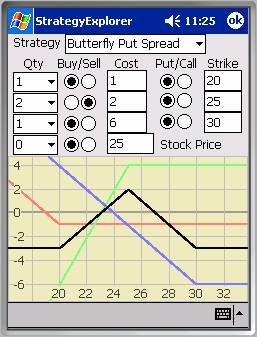
 A Butterfly Spread is a neutral
strategy with an upside like a Short Straddle, but limited losses. It can be constructed from calls or puts, including
two short options struck at-the-money and two long options with strikes
bracketing the spot price. The profit
zone can be extended by selecting bracketing options further from the spot
price, at somewhat higher cost.
A Butterfly Spread is a neutral
strategy with an upside like a Short Straddle, but limited losses. It can be constructed from calls or puts, including
two short options struck at-the-money and two long options with strikes
bracketing the spot price. The profit
zone can be extended by selecting bracketing options further from the spot
price, at somewhat higher cost.
Option Only Strategies - Neutral, High Volatility
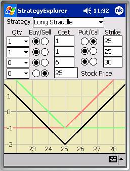
Long StraddleA Long Straddle is a neutral strategy, betting on a big move in the underlying stock price, so it’s a high volatility play. Ideally, it’s constructed from a long at-the-money call (red) and a long put with the same strike (green). Peak losses occur at the strike, with gains on both sides of the strike if the underlying moves sufficiently far away from the strike. It exhibits limited likely losses, but potentially unlimited profits.
Strangles
Strangles are similar to Straddles except that the strikes on the options are pulled away from the spot price of the underlying.
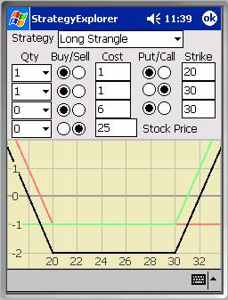
Long Strangle
Both options are struck out-of-the-money, so Long Strangles are generally less expensive strategies to pursue than Long Straddles. Long Strangles exhibit limited, fairly likely losses, but potentially unlimited profit potential, as shown in the example at left.
Strategies Involving Stock - Covered
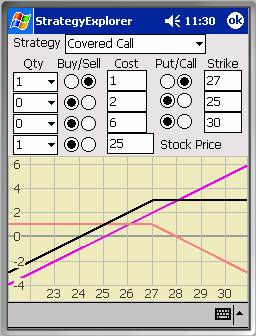
Covered CallA Covered Call strategy, also known as a Synthetic Short Put, is a strategy wherein the writer (seller) of the call owns the underlying stock on which the option is written. Covered calls are generally written in situations where the writer already owns the underlying and believes that the market has implied too much volatility in the underlying stock.
Since option prices rise with volatility, if the market is implying too much volatility, it’s possible to capture the premium represented by the difference in option prices resulting from the difference between the perceived and implied volatilities. Naturally, the seller hopes that time decay will render the short call worthless at expiry, turning the entire premium received into profit. Refer to the example at right.
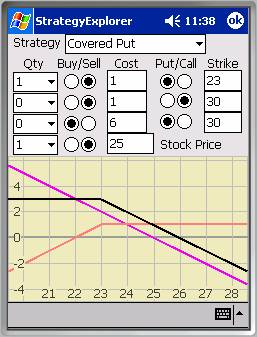
Covered PutA Covered Put strategy, also known as a Synthetic Short Call, is a strategy involving selling stock and a put against that underlying, though some traders simply sell the put and hold cash to cover the downside. Selling a put by itself is bullish. Coupled with a short stock, the upside here is capped and the downside is potentially unlimited.
Covered puts can be used to target a buy price on the underlying. The writer would set the option’s strike at the target price. The premium received effectively reduces the current stock price. Put writers like to issue options when they believe a rapidly falling (high volatility) stock has bottomed out. Refer to the example at left.
Strategies Involving Stock - Protective
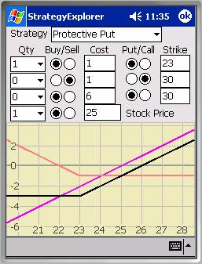
Protective Put
A Protective Put strategy, also known as a Synthetic Long Call, is a bullish strategy constructed from a long stock (purple) and a long put (red). This strategy hedges the downside in the stock position while retaining the upside profit potential.
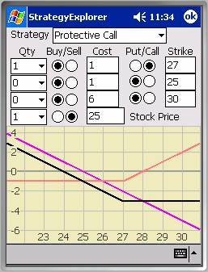
Protective Call
A Protective Call strategy, also known as a Synthetic Long Put, is a bearish strategy constructed from a short stock (purple) and a long call (red). This strategy hedges the upside in the stock position while retaining downside profit potential.
Strategies Involving Stock - Bracketed
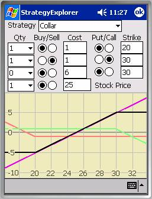
Collar
A Collar is a bullish strategy with the same profit profile as a Bull Spread. Unlike a Bull Spread, which is constructed from two options, the Collar includes a position in the underlying stock. A Collar is typically applied to protect profits already accrued in a long position in the underlying stock. It is constructed from a long stock, a long out-of-the-money put, and a short out-of-the-money call, as shown in the chart at right.
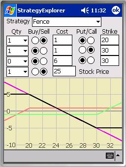
Fence
A Fence is a bearish strategy with the same profit profile as a Bear Spread. Unlike a Bear Spread, which is constructed from two options, the Fence includes a position in the underlying stock. A Fence is typically applied to protect profits already accrued in a short position in the underlying stock. It is constructed from a short stock, a short out-of-the-money put, and a long out-of-the-money call, as shown in the chart at left.
Strategies Involving Stock - Arbitrage
If C is the call price, P is the put price, S is the stock price, and K is the strike price, and Put-Call Parity is not true, there may be an opportunity for a risk-free profit through arbitrage. Put-Call Parity is often cited as or sometimes as where the strike in the simplistic model is replaced by its present value, but a more accurate picture also deducts the present value of dividends through expiry, thus . Obviously, this model only applies to situations where the put and the call share the same strike and expiration date.
You can use the StrategyExplorer to evaluate potential arbitrage opportunities by setting the price of the underlying stock and two of its options (a put and a call) with the same strike, bearing in mind that StrategyExplorer does not account for the time value of money. To get an accurate portrayal of arbitrage profit potential, you need to discount the stock price by the present value of the strike and the present value of any outstanding ex-dividends. If there’s any displacement above or below the horizontal axis, you can capture a risk-free profit on the spread if transaction fees are less than remaining margin.
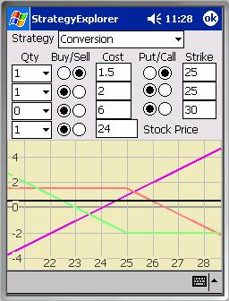
ConversionConversions are used by floor traders to capitalize on discrepancies between the pricing of calls and puts. When calls are overpriced relative to puts (the premium is grossly exaggerated in the example at right), a short term, riskless profit is available using a Conversion. A Conversion is constructed from a Synthetic Short Stock (a short call and a long put at the same strike), exactly offset by a long position in the underlying stock. If the profit line falls below the X-axis, you can execute a Reversal instead.
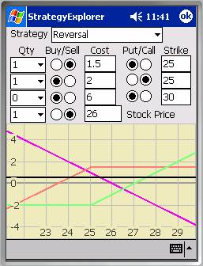
Reversal
Reversals are Reverse Conversions. They are used by floor traders to capitalize on discrepancies between the pricing of calls and puts (the premium is grossly exaggerated in the example at left). When puts are overpriced relative to calls, a short term, riskless profit is available via a reversal. A reversal is constructed from a Synthetic Long Stock (a short put and a long call at the same strike), exactly offset by a short position in the underlying stock. If the profit line falls below the X-axis, you can execute a Conversion instead.
References
Options, Futures, and Other Derivatives, Fifth Edition
John C. Hull. 2002 Prentice Hall
This is an excellent reference on
everything from interest rate markets, credit risk, hedging strategies, Black-Scholes theory, the greeks,
volatility smiles, etc.
Paul Wilmott Introduces Quantitative Finance
Paul Wilmott. 2001 John Wiley & Sons, Ltd.
Wilmott
has written various books in the computational finance arena, one being a
two-volume set (a greatly expanded version of this text), but in this
particular text Wilmott and